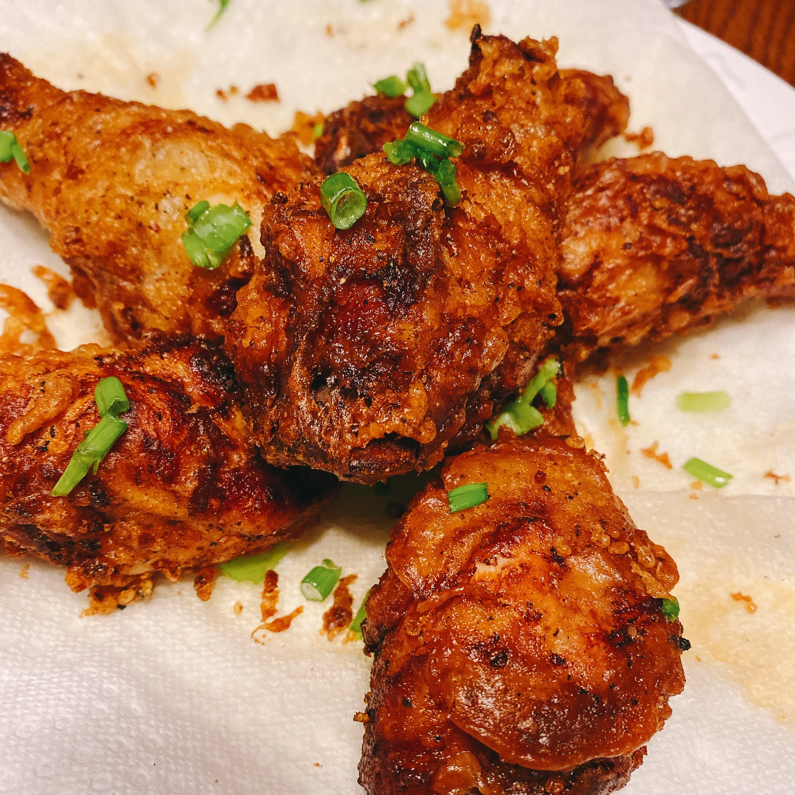

Korean Fried Chicken

Description
"I've always considered myself something of a fried chicken expert. I've pretty much had every single style known to man and this Korean fried chicken is officially my favorite. No other method I've come across has the same combination of tender, juicy, flavorful chicken and plate-scratching crispiness as this recipe does. It's simply a must-try!"
Ingredients
Marinade:
- 1 pound skinless, boneless chicken thighs, quartered
- 1/2 yellow onion, grated
- 4 cloves garlic, minced
- 1 teaspoon fine salt
- 1/2 teapsoon freshly ground black pepper
Batter:
- 3/4 cup cornstarch
- 1/2 cup self-rising flour
- 1 teaspoon white sugar
- 1/2 teaspoon ground black pepper
- 1/4 teaspoon salt
- 1 cup very cold water, or as needed
- oil, or as needed
Steps
- Stir chicken, onion, garlic, fine salt, and 1/2 teaspoon black pepper together in a bowl until chicken is coated. Cover the bowl with plastic wrap and refrigerate, 4 hours to overnight.
- Heat oil in a deep-fryer or large saucepan to 340 degrees F (171 degrees C)
- Whisk cornstarch, flour, sugar, 1/2 teaspoon black pepper, and 1/4 teaspoon salt together in a large bowl. Gradually whisk ice water into flour in until mixture resembles a smooth pancake batter. Transfer chicken to batter and stir to coat chicken completely.
- Working in batches, cook chicken in preheated oil for 4 minutes. Transfer cooked chicken to a cooling rack.
- Increase oil temperature in the deep-fryer or large saucepan to 375 degrees F (190 degrees C)
- Working in batches, cook chicken again in hot oil until golden brown and crispy on the outside, 3 to 4 minutes. Transfer to a wire rack to drain.